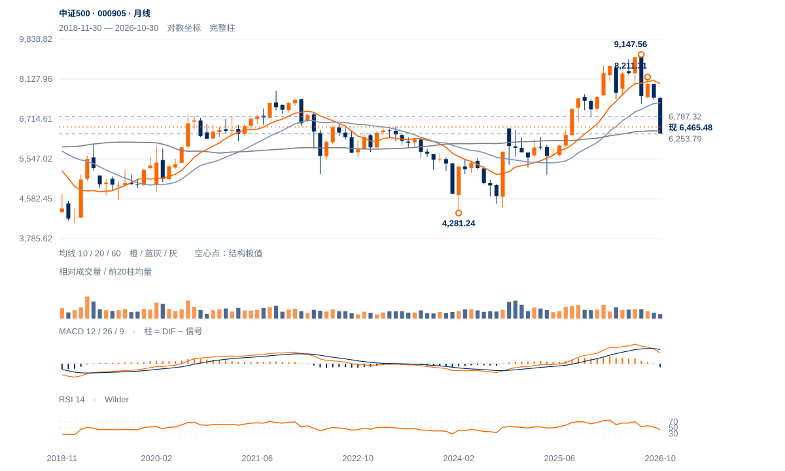

近端支撑受损
短线转入6500下方观察，反抽若无法收回，6254前低的测试权重将提高。当前距6500仅约0.19ATR，仍需用后续反抽质量区分轻穿与有效下破。
短线转入6500下方观察，反抽若无法收回，6254前低的测试权重将提高。当前距6500仅约0.19ATR，仍需用后续反抽质量区分轻穿与有效下破。
未来2—6周偏向6254—6787内反复，6500反抽失败将使下沿再受检验。原6820升级条件通过后，才讨论旧7222区域的回收；周线反弹高点尚未抬高，低位横盘也属于当前基准路径。
未来1—3个月先看6140—6418是否完成长期承接。若连续两周收低6254，6140回撤参照成为邻近下一观察位；守住并重返6714以上，才有较大级别筑底延伸的基础。

展开图表 ↗2024低点4281.24至今年7月9147.56的上涨已回吐55.12%。现价6465.49靠近2024年10月6417.81旧高，60月均线6335.11与200周均线6310附近，形成历史突破回测区。6714.40半幅回撤仍在上方，意味着长期支撑附近的反应尚未把价格重新推回升波上半部。
7月9148之后先跌至7222，再反弹至8月8211、9月7923，反弹高点持续降低；11月2日6253.79成为最新低点。当前反弹未过6787中峰，又失守6500近端观察位，仍是大调整中的低质量回收。旧突破区守住与中期趋势反转是两个阶段。
价格回到2024年旧突破区，6254实际低点尚在。6418附近的承接与6714半幅回撤的回收，共同决定筑底能否延伸。
11日收6713.18后连续两日回落，13日收6465.49，跌回原6500观察位下方；收盘位置仅8%，日内承接未形成明显回收。
9月22日7922.62至11月2日6253.79的跌幅约21.1%；现价仅修复这段价差的12.7%。本周高6779.25仍低于6787.32中峰。
当前20日与60日均线均在上方，周MACD仍负；日线正柱未对应中峰突破，反弹不足以改变中期下降背景。
先重新保持6500，再看6613；中期升级仍需原6820条件。
反抽6500失败强化偏弱；6254失守撤销当前前低承接解释。
价格已靠近长期水平与均衡交汇处，当前轻穿6500尚非异常放量破位；迅速收回并抬高周谷会削弱偏弱解释。
| 周期 | 最后完整柱 | 图示柱数 | RSI14 | ATR14 | MACD柱 |
|---|---|---|---|---|---|
| 日线 | 2026-11-13 | 185 | 39.26167 | 186.53941 | 39.87136 |
| 周线 | 2026-11-13 | 156 | 33.45142 | 433.10121 | -148.66647 |
| 月线 | 2026-10-30 | 96 | 44.17643 | 809.30614 | -136.00063 |
国内完整周线至11月13日；11月月线进行中。指数价格不复权，长期历史按实际可用起点。